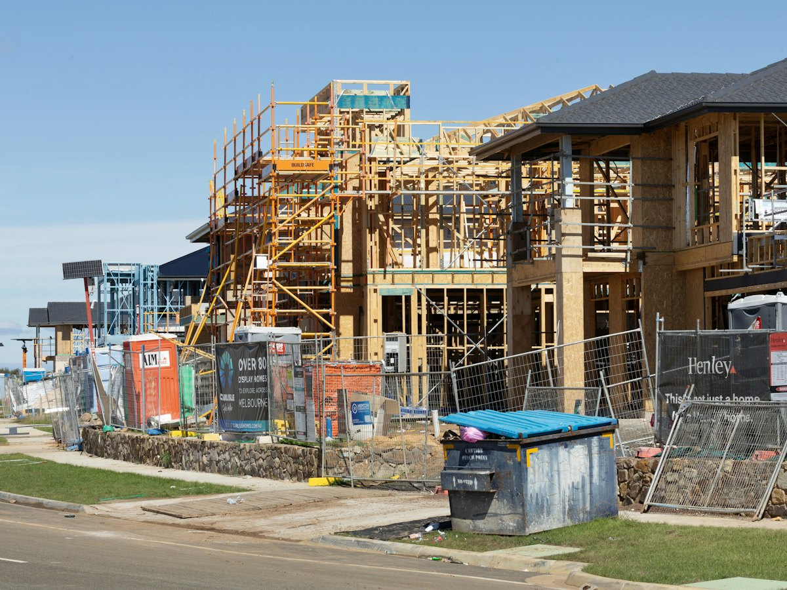

New homes
Single and double-storey homes, from first homes in Worcester to farmhouses in the Hex Valley. NHBRC enrolment, SANS 10400-XA energy compliance and the occupancy certificate are included.
New homes, wine cellars, packhouses, warehouses and schools, built by one team from foundation to handover across the Boland and Breede River Valley.

Boland Structures is an NHBRC-registered, CIDB Grade 6 GB building contractor based in Worcester. We build residential, agricultural, commercial and public buildings from 150 m² to 5 000 m², and every project is a fixed-price contract.
Most building projects in the Boland go wrong in the gaps between trades. The plumber waits for the bricklayer, the roofer waits for the engineer, and the client pays for the waiting. We close those gaps by running earthworks, concrete, brickwork, roofing and finishing with our own crews. Electrical and plumbing go to registered trades we've worked with for years.
You get one site manager for the whole build, a written programme with a date for every stage, and a photo report every Friday.
Six types of building make up most of our construction work in the Boland.
Single and double-storey homes, from first homes in Worcester to farmhouses in the Hex Valley. NHBRC enrolment, SANS 10400-XA energy compliance and the occupancy certificate are included.
Insulated cellars with temperature-stable walls, floors graded to drains and tasting rooms people want to visit. We schedule around harvest so your cellar is ready before the first grapes arrive.
Steel-portal packhouses, cold rooms and loading docks for fruit and table-grape farms, with power-floated floors built for forklifts.
Warehouses, workshops and light-industrial units with steel structures, roller doors and industrial floors of up to 3 000 m² in one pour.
Office blocks, shops and business parks with face-brick and glass facades, parking and municipal service connections.
Public-sector buildings delivered to Department of Public Works standards, with phased work so occupied sites stay open.
Four stages from an empty site to the day you get the keys.
We walk the site with you, check access, slope and services, and agree on the brief. No charge.
Approved plans, the engineer's design and an itemised fixed-price quote within 5 working days of final drawings.
Earthworks, foundations, structure, roof, then finishes. Weekly photo reports and a site meeting every second week.
Snag walk, electrical and plumbing certificates, the occupancy certificate and a 5-year workmanship guarantee.

Every quote we send is itemised, so you can see where the money goes. These six factors change the price of a new build in the Boland the most.
New builds across the Cape Winelands
We build across the Cape Winelands and Breede River Valley, with most projects within 60 km of our Worcester yard.
It depends on size, ground conditions and finishes, so we don't publish a rate per square metre that would mislead you. Book a free site visit and we'll give you an itemised fixed-price quote within 5 working days of final plans.
Yes. Boland Structures is NHBRC registered, and we enrol every new home with the NHBRC before construction starts, as the law requires.
A typical 200–300 m² home takes 6 to 9 months from site handover, depending on weather and finishes. Your programme shows the date for every stage before we start.
Yes. About a third of our work is on farms around Worcester, De Doorns, Rawsonville and Robertson, including cellars, packhouses, staff housing and farmhouses.
Yes. We price and build from your architect's approved plans, or our planning team can draw them for you.
Your contract includes a completion date. If we're late because of our own delays, the penalties in the contract apply. Weather delays and changes you ask for are handled as agreed extensions.
Send us your plans or book a free site visit. You'll have a fixed-price quote within 5 working days.